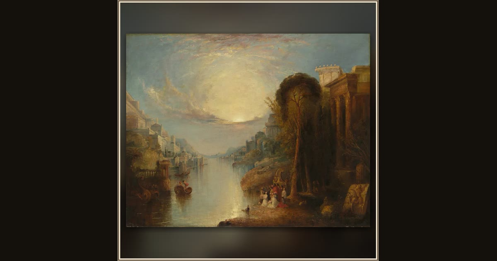

Carthage
William Linton (British, 1791–1876) · c. 1830 · cma
Linton paints Carthage with boats on a waterway between monumental buildings; Aristotle considers the value of a city's connection to the sea and its nearby harbor (7.1327a) Explore its place in Aristotle's Politics, Book VII, section 9.